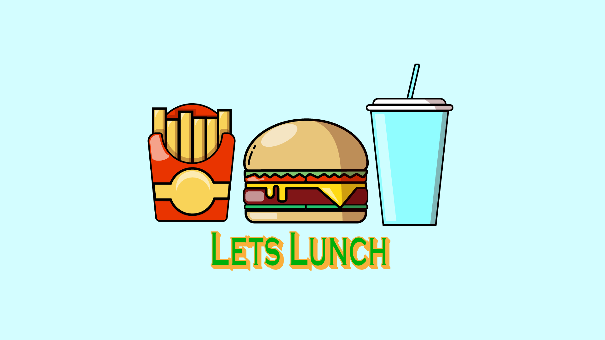
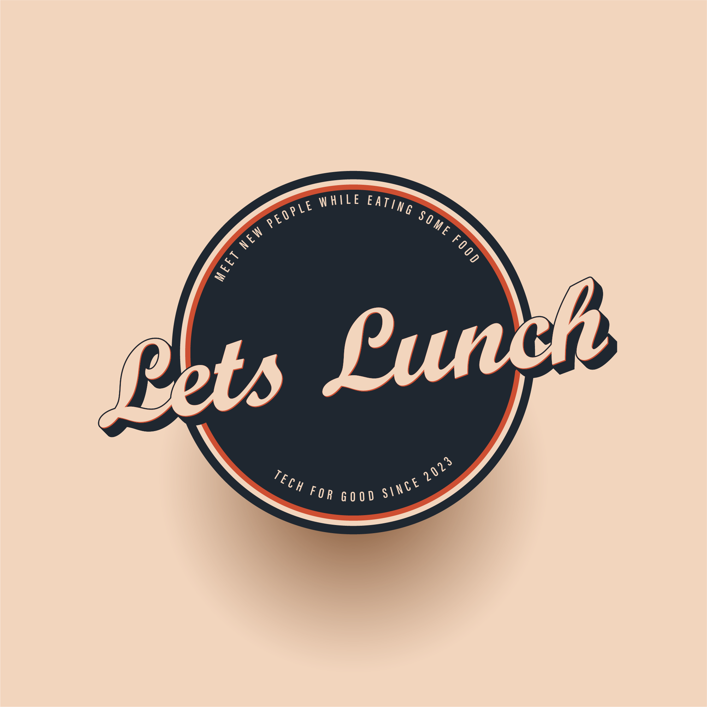
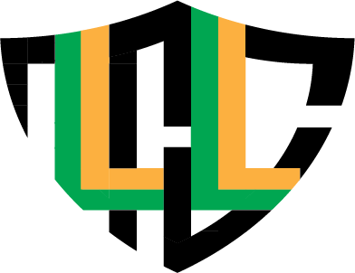

Lets Lunch Logo
  I had the opportunity to work with a group of students on a mobile startup idea lets lunch. This was a great opportunity not only from the coding side, but also being able to create designs for them such as banners and icons. These are some of the Designs I've created for the project.
I've learned how to overlap shapes and use them to my advantage to create straight edges and unique designs. While working on this, I also found myself trying to make the design pop by adding shadows or reflective parts if they were to be shined to a light.
Dept. of Defense Logo
As part of my recent internship, they required somebody to create a logo to represent our program EPIC-SPICE. I stepped in and had all the interns have a say on what should the final product be. It ended up with using different variations of it for create slides. I've learned how to use the ruler tool to keep it symmetrical, image trace to do low fidelity images as well as black and white, and I improved my ability to use the pen tool. I hope to do more real world design projects like this!